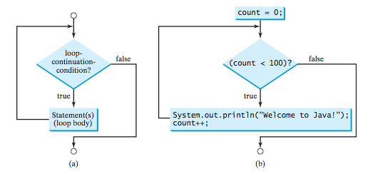
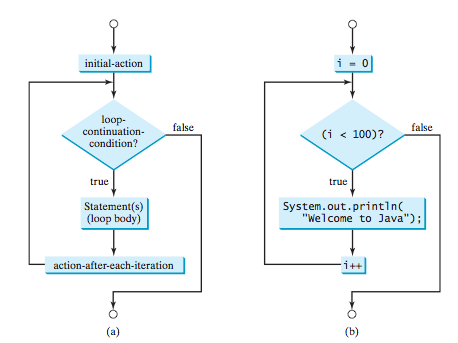

CS201: Introduction to Programming
Lecture 05 / Loops
Reading assignment: chapter 5
Lesson Objectives
- To write programs for executing statements repeatedly using a while loop
- To follow the loop design strategy to develop loops
- To control a loop with a sentinel value
- To obtain large input from a file using input redirection rather than typing from the keyboard
- To write loops using do-while statements
- To write loops using for statements
- To discover the similarities and differences of three types of loop statements
- To write nested loops
- To learn the techniques for minimizing numerical errors
- To implement program control with break and continue
- To process characters in a string using a loop in a case study for checking palindrome
Purpose of Loops
Purpose of a loop: do things over and over again.
While Loop
A while loop is the most basic looping structure. It is consisted of a "stopping" or "termination" conditon and loop body. The loop body will continue to to execute as long as the loop-continuation-condition is true.
while (loop-continuation-condition) {
// Loop body
Statement(s);
}
What does a flow of the whilte look like?
Let us write a simple number guessing game:
- Computer: I am thinking of a number between 1 and 10
- Player: is it 4?
- Computer: Higher
- Player: is it 8?
- Computer: Lower
- Player: is it 6?
- Computer: Lower
- Player: is it 5?
- Computer: You've got it!
Can we write this program without a loop construct? Not easily. So let us come up with a strategy.
- Identify the statements that need to be repeated
- Wrap these statements in a loop between the the "{" and "}"
- Code the loop-continuation-condition. In other words, determine when are you "done"
Another approach to controlling the loop termination logic is: special input value, known as a sentinel value, signifies the end of the input. A loop that uses a sentinel value to control its execution is called a sentinel-controlled loop.
The do-while loop
The do-while loop is very similar to that of a while loop except that you can guarantee execution of the loop body at least once.
The for loop
With the while loop, you typically do not know how many times to execute something. Hence do something while some state is true. What if you know execute how many iterations is required?
The syntax for a for loop is very structured:
for (initial-action;
loop-continuation-condition;
action-after-each-iteration) {
// Loop body;
Statement(s);
}
The flowchar for a for loop is similar to that of a while loop:
What are some of the advantages of a for loop over a while loop? The bigger question is what and when to use a particular loop?
Nested Loops
You can nest loops within another loops. For example:
for (int i = 1; i <= 10; i++) {
for (int j = 1; j <= 10; j++) {
System.out.printf("%3d ", i * j);
}
System.out.println("");
}
Break and Continue keywords
There are additional controls over loops flow:
- break: stop execution and exit the loop (or exit the switch statement)
- continue: stop execution and return to the loop-continuation-condition
Lab Exercises
For each of the following exercises, practice developing and running your program with Eclispe. Note that the lab assignments are not graded.
- Modify the number guessing game so that the player can only have three changes at guessing the right number.
- Write a program that determines if a string is a palindrome.
- Write a program that reads a the contents of a matrix $M$.
- Write a program that scales matrix $M$ by 0.05.